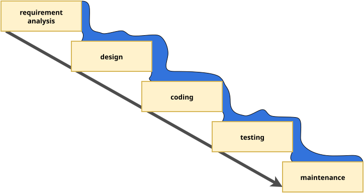

content
- software development life cycle
- waterfal
- V model
- incremental
- agile
- SCRUM
- kanban
waterfall model
- earliest SDLC model
- the origin of the name is that the progress flows in one direction, downwards like a waterfall
- not iterative, not flexible
- linear, sequential phases
criticism
- Clients may not know exactly what their requirements are before they see working software and so change their requirements, leading to redesign, redevelopment, and retesting, and increased costs. (Parnas & Clements, 1986) In most cases the people who comission the building of the a software system do not know exactly what they want and are unable to tell us all they know.
modified waterfall model
V model (Forsberg & Mooz, 1991)
- still rigid
- each phase has output and a review process
- errors are found at early stage
- decreases the risk of failure
- large to small: testing is done in a hierarchical perspective

{kind=link}
The unit testing will be discussed later in the testing chapter. For now it is enough to know that it is a tool to test the lower level part of the software.
iterative model
- software is built incrementally,
- with each iteration adding new features or refining existing ones
- possible to get feedback after each iteration
- can be rigid within an iteration

extreme programming
- advocates frequent releases in short development cycles
- intended to improve productivity and introduce checkpoints at which new customer requirements can be adopted
- features
- programming in pairs,
- doing extensive code review,
- unit testing of all code,
- not programming features until they are actually needed,
- flat management structure

- considered a type of agile software development
spike is a task for exploring or answering questions, not delivering a product
agile model
- continuous collaboration and fast response to change, while the iterative model takes a more gradual approach, building up the final product over multiple iterations
- SCRUM is an agile methodology

the agile manifesto
We are uncovering better ways of developing software by doing it and helping others do it. Through this work we have come to value:
- Individuals and interactions over processes and tools
- Working software over comprehensive documentation
- Customer collaboration over contract negotiation
- Responding to change over following a plan
That is, while there is value in the items on the right, we value the items on the left more.
. . .
Principles behind the Agile Manifesto
- The agile does not mean a specific methodology, so SCRUM is not the only agile approach (the course will cover SCRUM later), and agile is not the only approach.
- The documentation is still important, the course will cover later what and how should be documented, but the point is no matter how much documentation you have, if the software does not work as expected.
- In the business world, contracts are important, especially contract violations and the penalty clauses, but customers should be treated as a partner, and collaborative communication should come first, before giving more jobs to the lawyers.
- Planing is import (even having a plan B is often advisable), but the world is in constant change, so flexibility is required. Compared to the waterfall, which requires you to follow the initial plan, agile allows changes during the development. Remember, programming is more like gardening.
There are also twelve principles behind the Agile Manifesto, that provides some more detailed interpretation for the values.
Principles behind the Agile Manifesto
- Our highest priority is to satisfy the customer through early and continuous delivery of valuable software.
- Welcome changing requirements, even late in development. Agile
processes harness change for the customer’s competitive advantage.
- a feedback is something that represent value, so change requests should be welcomed
- from a users’ perspective: small changes are easier to adapt, than drastic restructurings
- Deliver working software frequently, from a couple of weeks to a
couple of months, with a preference to the shorter timescale.
- significant seep-up compared to the waterfall
- Business people and developers must work together daily throughout the project.
- Build projects around motivated individuals. Give them the environment and support they need, and trust them to get the job done.
- The most efficient and effective method of conveying information to and within a development team is face-to-face conversation.
Release early. Release often. And listen to your customers.
Eric S. Raymond: The Cathedral and the Bazaar (1997)
One of the main principle of agile is to collaborate with the customer, who should be involved into the development. Show them the software as soon as possible and ask for feedback. Feedback means there will be change requests.
Principles behind the Agile Manifesto
- Working software is the primary measure of progress.
- Agile processes promote sustainable development. The sponsors, developers, and users should be able to maintain a constant pace indefinitely.
- Continuous attention to technical excellence and good design enhances agility.
- Simplicity–the art of maximizing the amount of work not done–is
essential.
- see KISS
- The best architectures, requirements, and designs emerge from
self-organizing teams.
- self-organizing teams are a key element of SCRUM
- At regular intervals, the team reflects on how to become more
effective, then tunes and adjusts its behavior accordingly.
- retrospectives in SCRUM
software craftmanship
As aspiring Software Craftsmen we are raising the bar of professional software development by practicing it and helping others learn the craft. Through this work we have come to value:
- Not only working software, but also well-crafted software
- Not only responding to change, but also steadily adding value
- Not only individuals and interactions, but also a community of professionals
- Not only customer collaboration, but also productive partnerships
That is, in pursuit of the items on the left we have found the items on the right to be indispensable.
© 2009, the undersigned. This statement may be freely copied in any form, but only in its entirety through this notice.
This reads like an answer to the agile manifesto. The working software is good, but should well-crafted, which aligns with the ninth agile principle: “Continuous attention to technical excellence and good design enhances agility.”
agile vs. waterfall
| agile | waterfall |
|---|---|
| incremental | sequential |
| phases repeated | phases completed exactly once |
| flexible | rigid |
| allows changes during the development | no change once the development started |
agile vs. waterfall
Can waterfall work? Yes, it can, if the customer exactly knows what they want and can express it in technical terms.
Although usually the customer does not know what they want, so agile usually work better.
references
Forsberg, K., & Mooz, H. (1991). The relationship of system engineering to the project cycle. Center for Systems Management, 5333.
Parnas, D. L., & Clements, P. C. (1986). A rational design process: How and why to fake it. IEEE Transactions on Software Engineering, 2, 251–257.
Royce, W. W. (1970). Managing the development of large software systems: Concepts and techniques. Proc. IEEE WESTCON, Los Angeles, 1–9.
Yerukala, M. (2023). What is extreme programming - XP practices. https://mindmajix.com/what-is-extreme-programming .